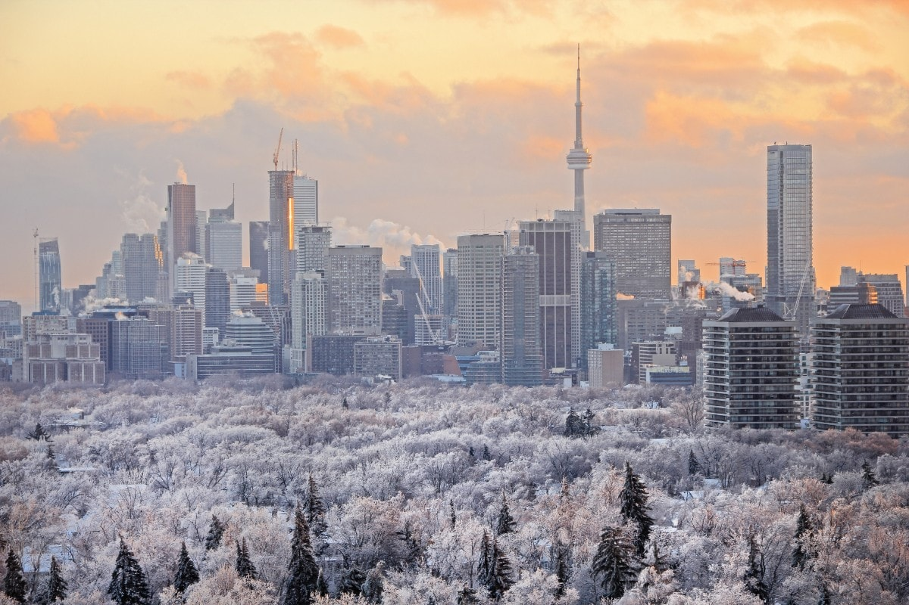

Ontario, second largest province of Canada in area, after Quebec. It occupies the strip of the Canadian mainland lying between Hudson and James bays to the north and the St. Lawrence River–Great Lakes chain to the south. It is bordered to the east by the province of Quebec, to the south by the United States, and to the west by the province of Manitoba. The most populous Canadian province, Ontario is home to more than one-third of Canada’s total population.
Ontario is also the nation’s wealthiest province, having a substantial share of the country’s natural resources and its most mature and diversified industrial economy. It is at once Canada’s economic pacemaker and a major force in national politics. To Canadians living outside its boundaries, its preeminent position and the influence of Toronto, the provincial capital, and Ottawa, the national capital, have constituted a not-infrequent source of regional resentment. Area 415,599 square miles (1,076,395 square km). Pop. (2021) 14,223,942.
